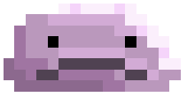

Naomi Pollinger
First Year Computer Science Student

Portfolio Projects:
Here are some of my coding projects in the past couple years! I've mainly gotten experience in C# using the Unity plugin, though through my University projects I have gotten experienced with Java, JavaScript, HTML and CSS! Press on any of the links below to view the content I have created.
- Dreamscape is the project I am personally the most proud of, as over the course of roughly 9 months I created this game and in turn also taught myself how to code using Unity and C# in the process! In the end this game got the best Game Award at Access Creative College, which I attended for two years before University at Aston.
- The button below showcases some of the work I have created during my first year of studies. I mainly used Java, and learnt while completing the weekly portfolio tasks assigned to me. Hopefully some progress can be seen in the quality of code and the complexity of the assignments!
- This project was done in my final year of college as a Game Jam to allow me and my peers to gain expereince working in a team on a project. To say that this was fun is a complete understatement. This was completed over the course of 3 days, in a team of 4 people.
Work Experience
- Tasty Plaice (2024)
- I am currently working in fast food alongside my studies to gain experience working in a fast-paced and customer facing environment while also earning money during term time. - Mobile Pie (2022-23) - I worked as a game tester here one day a week during my second year of college. It made me develop skills such as my attention to detail and my determination and concentration.
- Student Ambassador (2022-23) - I used to be a student ambassador in my second year of college. This meant I had to conduct myself in a professional manner to correctly represent my class and accurately give feedback in meetings to course leaders.
Education
- Aston University
(2023-present)
Working towards a degree in Computer Science - Access Creative College
(2021-23)
Level 3 Extended Diploma in Games Technology - Distinction * - Oxbridge Online Learning
(2021-22)
AS-Level Computer Science - B - Downend Secondary School
(2016-21)
GCSEs in the following: - Computer Science - 9
- Maths - 8
- Physics - 7
- Chemistry - 7
- Biology - 7
- English - 7
- Art - 7
- History - 7
Technical Skills
- Unity
- C#
- Java
- HTML
- CSS
- JavaScript
- 3D Modelling
- Animation
- Drawing/ Photoshop
Soft Skills
- Communication
- Self-Motivation
- Organisation
Interests
Over the years I have had many interests, many of which help me learn in University on a day-to-day basis!
Some of my current hobbies include:
- Art
- Game Development
- Knitting
- Swimming